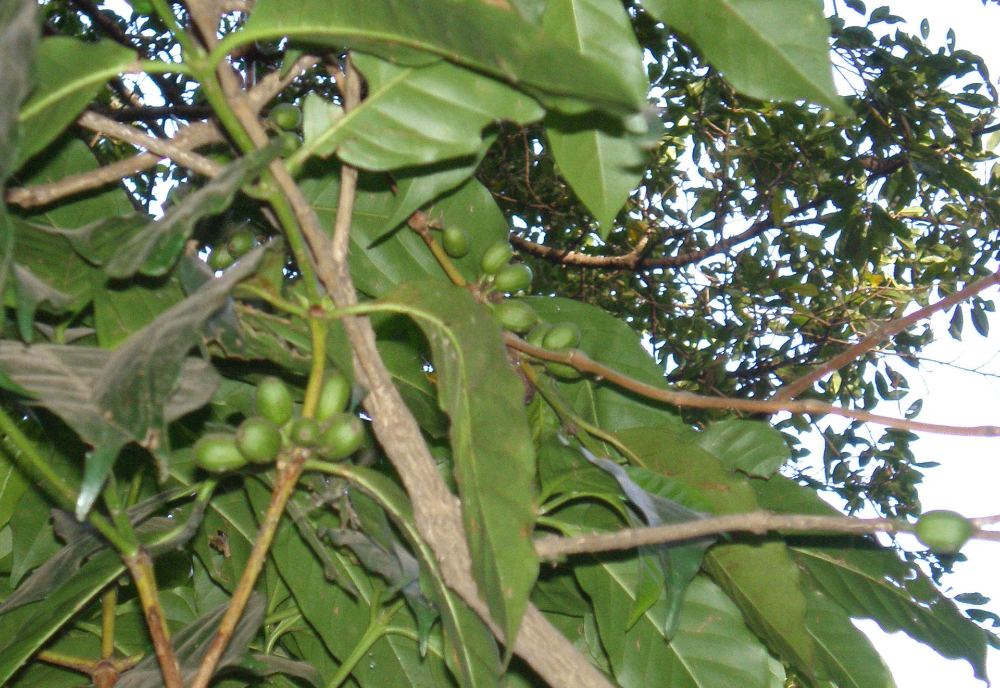

-
Ethiopia
Ethiopia is the world's seventh largest producer of coffee, and Africa's top producer, with 260,000 metric tonnes in 2006.[5] Over 4 million small-scale farmers produce coffee.[6] Half of the coffee is consumed by Ethiopians,[7] and the country leads the continent in domestic consumption.[8] The major markets for Ethiopian coffee are the EU (about half of exports), East Asia (about a quarter) and North America.[9] The total area used for coffee cultivation is estimated to be about 4,000 km2 (1,500 sq mi). The exact size is unknown due to the fragmented nature of the coffee farms.[10] The way of production has not changed much, with nearly all work, cultivating and drying, still done by hand.[7]
Ethiopia's coffees can be divided into three main categories, depending on their method of production: Forest Coffees, from wild coffee trees grown mostly in the southwest of the country; Garden Coffees, from trees typically planted around a homestead or other dwelling; Plantation Coffees, from trees grown intensively on large farms.[11]
The revenues from coffee exports account for 10% of the annual government revenue, because of the large share the industry is given very high priority, but there are conscious efforts by the government to reduce the coffee industry's share of the GDP by increasing the manufacturing sector.[12]
 The Tea and Coffee Authority, part of the federal government, handles anything related to coffee and tea,[10] such as fixing the price at which the washing stations buy coffee from the farmers. This is a legacy from a nationalization scheme set in action by the previous regime that turned over all the washing stations to farmers cooperatives.[13] The domestic market is heavily regulated through licenses, with the goal of avoiding market concentration.[13]
Ethiopian coffee beans of the species Coffea arabica can be divided into three categories: Longberry, Shortberry, and Mocha. Longberry varieties consist of the largest beans and are often considered of the highest quality in both value and flavour. Shortberry varieties are smaller than the Longberry beans but, are considered a high grade bean in Eastern Ethiopia where it originates. Also the Mocha variety is a highly prized commodity. Mocha Harars are known for their peaberry beans that often have complex chocolate, spice and citrus notes.